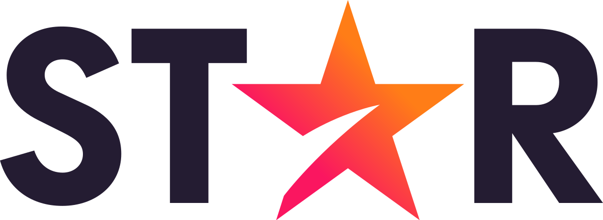

29 de agosto de 1997
Netflix
Netflix es un servicio de streaming por suscripción que les permite a sus miembros ver series y películas sin publicidades en un dispositivo con conexión a internet. También puedes descargar series y películas en un dispositivo con iOS, Android o Windows 10 y verlas sin conexión a internet. Si ya eres miembro y quieres saber más acerca de cómo usar Netflix, visita Cómo usar Netflix.
Leer más...

12 de noviembre de 2019
Disney
Disney+ es un servicio de streaming propiedad de The Walt Disney Company mediante su división Disney Media and Entertainment Distribution.El servicio ofrece películas, documentales, especiales, cortos, programas y series de televisión producidas por The Walt Disney Studios y Walt Disney Television.
Leer más...

23 de abril de 2006,
Spotify
Spotify es un servicio de música, pódcasts y vídeos digitales que te da acceso a millones de canciones y a otro contenido de creadores de todo el mundo. Las funciones básicas, como escuchar música, son totalmente gratis, pero también tienes la opción de mejorar tu cuenta con Spotify Premium.Spotify está disponible en una gran variedad de dispositivos, como ordenadores, teléfonos, tabletas, altavoces, televisores o coches, y puedes pasar fácilmente de uno a otro con Spotify Connect
Leer más...

31 de agosto de 2021
Star
Star+ es un servicio de streaming propiedad de The Walt Disney Company. Fue lanzado el 31 de agosto de 2021 y se encuentra disponible para América Latina
Leer más...